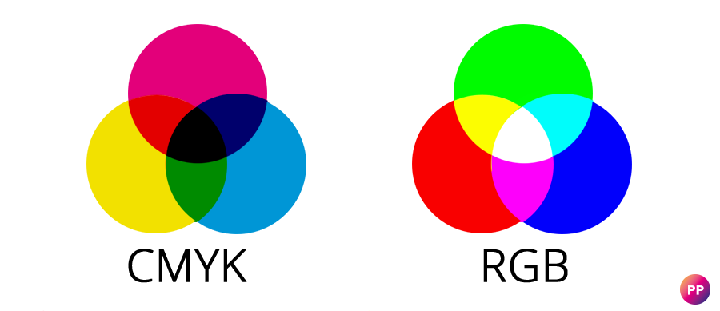

Er zijn verschillende soorten kleurmodellen zoals RGB en CMY-K.
RGB staat voor Rood, Groen en Blauw, Dit model is gebaseerd op een zwart achtergrond.
Wanneer je een foto maakt van het scherm en inzoomd zie je een resolutie(een groep pixels
bij elkaar),in die pixels zie je de drie verschillende kleuren RGB. Wanneer die kleuren
uit gaan wordt het beeld zwart.

Het CMY-K model staat voor Cyan, Magenta, Yellow en wanneer
Je zwart wilt toevoegen staat de letter K voor Key of blacK. Dit komt omdat het CMY-K
model is gebaseerd op een wit achtergrond. Deze twee verschillende modellen heb je
nodig omdat wanneer je iets uit wilt printen op zwart papier maar je hebt de kleuren
gezien op wit papier gaan de kleuren er anders uit zien dan je had verwacht.
Klik hier voor meer uitleg